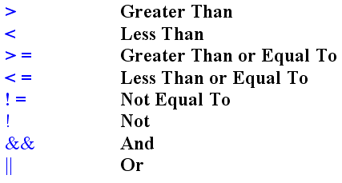
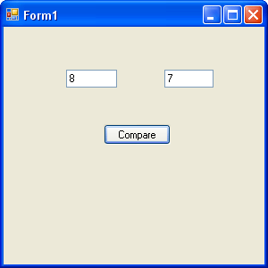
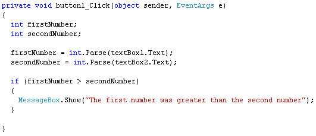
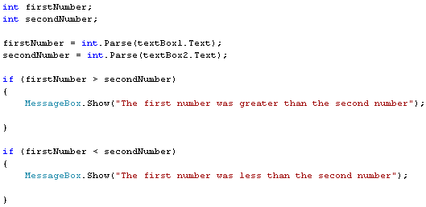

C# Operators
<< Continues from the previous lesson
You've already met one Conditional Operator, the double equals sign ( == ). You use this in IF Statement when you want to check if a variable "has a value of" something:
if ( myVariable == 10)
{
//EXECUTE SOME CODE HERE
}
So the above line reads, "IF whatever is inside of myVariable has a value of 10, execute some code."
Other Conditional Operators you'll use when you're coding are these:

Because you need to learn these Operators, let's get some practice with them.
Start a new project. Add two text boxes and a button to your form. Resize the text boxes and type 8 as the Text property for the first text box, and 7 as the Text property for the second text box. Set the Text property for the button to the word "Compare". Your form will then look like this:

Double click the button to get at the coding window. What we'll do is to get the numbers from the text boxes and test and compare them. So the first thing to do is to set up some variables:
int firstNumber;
int secondNumber;
Then get the text from the text boxes and store them in the variables (after converting them to integers first.)
firstNumber = int.Parse(textBox1.Text);
secondNumber = int.Parse(textBox2.Text);
What we want to do now is to compare the two numbers. Is the first number bigger than the second number? To answer this, we can use an IF Statement, along with one of our new Conditional Operators. So add this to your code:
if (firstNumber > secondNumber)
{
MessageBox.Show("The first number was greater than the second number");
}
Your coding window will then look like this (our message box above is only on two lines because it can't all fit on this page):

So in between the round brackets after if, we have our two variables. We're then comparing the two and checking to see if one is Greater Than ( > ) the other. If firstNumber is Greater Than secondNumber then the message box will display.
Run your programme and click your button. You should see the message box display. Type a 6 in the first text box, and click the button again. The message box won't display. It won't display because 6 is not greater than 7. The message box code is inside of the curly brackets of the IF Statement. And the IF Statement only gets executed if firstNumber is Greater Than secondNumber. If it's not, C# will just move on to the next line. You haven't got any more lines, so C# is finished.
Stop your programme and go back to your code. Add a new if statement below your first one:
if (firstNumber < secondNumber)
{
MessageBox.Show("The first number was less than the second number");
}
Again, our message box above is spread over two lines because there's not enough room for it on this page. Your message box should go on one line. But the code is just about the same! The thing we've changed is to use the Less Than symbol ( < ) instead of the Greater Than symbol ( > ). We've also changed the text that the message box displays.
Run your programme, and type a 6 in the first text box. You should see your new message box display. Now type an 8 in the first text box, and click your button. The first message box will display. Can you see why? If your programme doesn't work at all, make sure it is like ours in the image below:

With your programme still running, type a 7 in the first box. You will then have a 7 in both text boxes. Before you click your button, can you guess what will happen?
The reason that nothing happens at all is because you haven't written any code to say what should happen if both numbers are equal. For that, try these new symbols:
>= (Greater Than or Equal to)
And these ones
<= (Less Than or Equal to)
Try these new Conditional Operators in place of the ones you already have. Change the text for your message boxes to suit. Run your code again. When you click the button, both message boxes will display, one after the other. Can you see why this happens?
Another Conditional Operator to try is Not Equal To ( != ). This is an exclamation mark followed by an equals sign. It is used like this:
if (firstNumber != secondNumber )
{
//SOME CODE HERE
}
So, "IF firstNumber is not equal to secondNumber execute some code."
You can even use the exclamation mark by itself. You do this when you want to test for a false value between the round brackets after if. It's mostly used with Boolean values. Here's an example:
bool testValue = false;
if (!testValue)
{
MessageBox.Show("Value was false");
}
So the exclamation mark goes before the Boolean value you want to test. It is a shorthand way of saying "If the Boolean value is false". You can write the line like this instead:
if (testValue == false)
But experienced programmers just use the exclamation mark instead. It's called the NOT Operator. Or the "IF NOT true" Operator.
Try not to worry if you don't have a thorough grasp of all the Conditional
Operators yet - you'll get the hang of them as you go along. But try the next
exercise.
Exercise F
Write a small programme with a text box and a button. Add a label to ask people
to enter their age. Use Conditional Logic to test how old they are. Display
the following messages, depending on how old they are:
Less than 16: "You're still a youngster."
Over 16 but under 25: "Fame beckons!"
Over 25 but under 40: "There's still time."
Over 40: "Oh dear, you've probably missed it!"
Only one message box should display, when you click the button. Here's some code to get you started:
int age;
age = int.Parse(textBox1.Text);
if (age < 17)
{
MessageBox.Show("Still a youngster.");
}
For the others, just add more IF Statements, and more Condition Operators.
AND and OR
The final two Operators we'll have a look at are these:
&& (And)
|| (Or)
These two are known as Logical Operators, rather than Conditional Operators (so is the NOT operator).
The two ampersand together (&&) mean AND. You use them like this:
bool isTrue = false;
bool isFalse = false;
if ( isTrue == false && isFalse == false )
{
}
You use the AND operator when you want to check more than one value at once. So in the line above, you're checking if both values are false. If and ONLY if both of your conditions are met will the code between curly brackets get executed. In the code above, we're saying this:
"If isTrue has a value of false AND if isFalse has a value of false then and only then executed the code between curly brackets."
If isTrue is indeed true, for example, then any code between curly brackets won't get executed - they both have to be false, in our code.
You can test for only one condition of two being met. In which, use the OR ( | | ) operator. The OR operators is two straight lines. These can be found above the back slash character on a British keyboard, which is just to the left of the letter "Z". (The | character is known as the pipe character.) You use them like this:
bool isTrue = false;
bool isFalse = false;
if ( isTrue == false || isFalse == false )
{
}
We're now saying this:
"If isTrue has a value of false OR if isFalse has a value of false then and only then executed the code between curly brackets."
If just one of our variables is false, then the code in between curly brackets will get executed.
If all that sounds a bit complicated, don't worry about it - you'll get more practice as we go along
In the next section, we'll have a look at loops, which are another crucial hurdle to overcome in programming. By the end of the section, you'll have written your own times table programme.